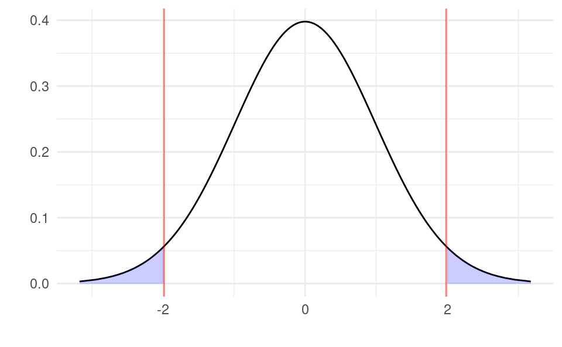
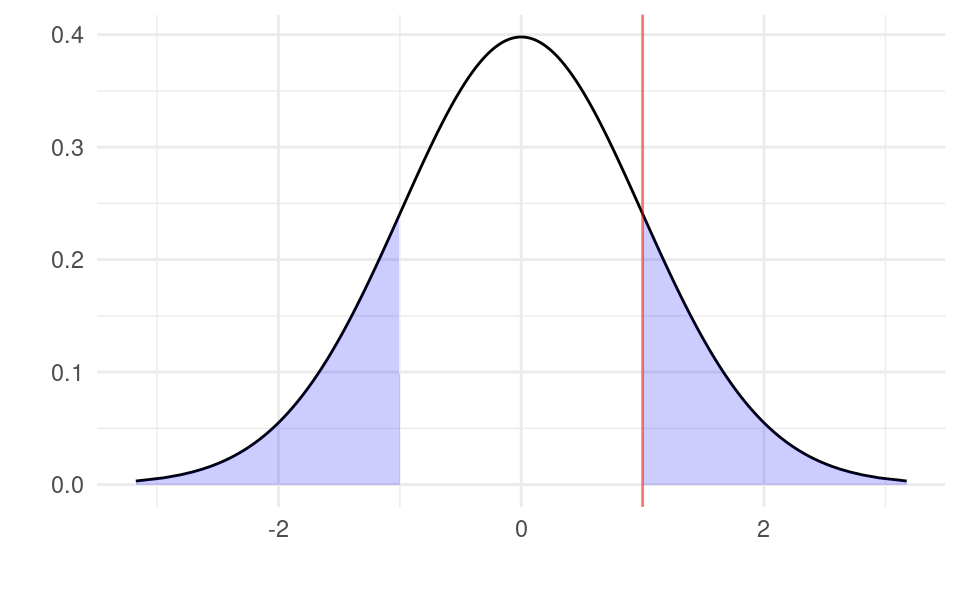
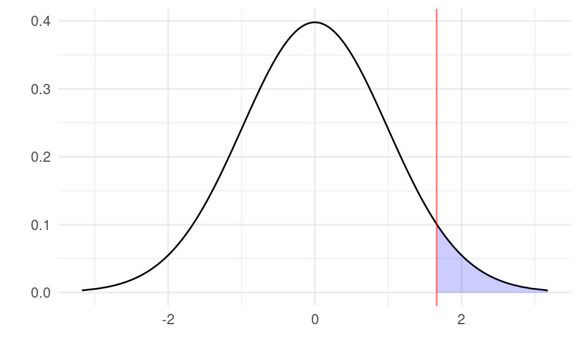
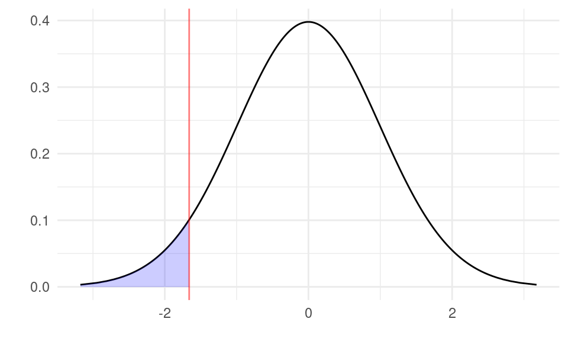
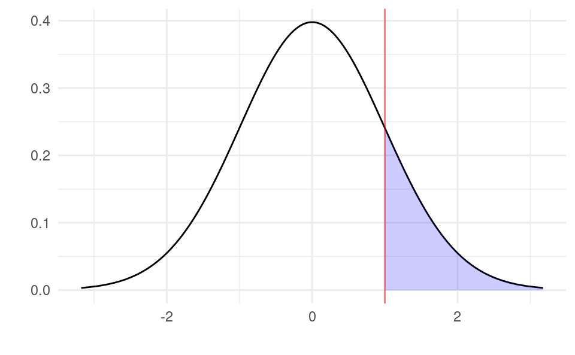
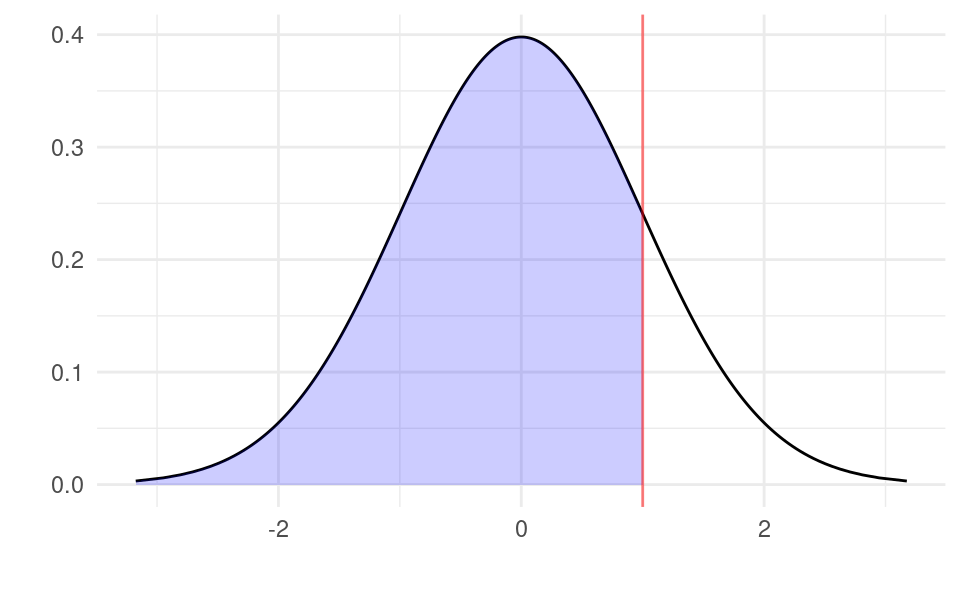

We will now learn how to do hypothesis tests for the regression slope. Like confidence intervals, it is very similar to performing hypothesis tests for the sample mean that you learned about in Statistics 1. We will first show the theory behind hypothesis testing for the regression slope. We will then show a numeric example before finally showing how to perform hypothesis tests in R.
10.1 Notation
Suppose we wanted to test if \beta_1 was different to some number b. For example, if we wanted to test if the slope was not equal to one (i.e. \beta_1\neq 1), then we would have b=1. We call this number b the hinge. If we are testing if \beta_1\neq b, we set up the null and alternative hypotheses as follows:
Null hypothesis: H_0: \beta_1=b
Alternative hypothesis: H_1: \beta_1\neq b
If we are testing a claim like “\beta_1 is not equal to b” then that is referring to the alternative hypothesis. The null hypothesis is then always the exact opposite of the alternative hypothesis.
This type of test is called a two-sided test because the values of \beta_1 in the alternative hypothesis are on two sides of the null hypothesis.
Denote by B_1 the random variable that estimates \beta_1 for any random sample drawn from the population. This B_1 is not the regression output for our dataset (our observed sample) in R - that is b_1. Nor is it the true population slope we are trying to estimate - this is \beta_1. Instead B_1 is a theoretical object that maps a hypothetical random sample that we could draw from the population into an estimate of \beta_1.
When we have a dataset, we have exactly one random sample drawn from the population and our estimate of \beta_1 from this is b_1. But in principle we could draw another random sample from the population and get a different estimate of \beta_1. We can think of the possible values of B_1 as all the possible values of estimates of \beta_1 from different random samples from the population. While b_1 is observed and fixed (because we have observed our sample and estimated the slope), B_1 is neither observed nor fixed: it’s a random variable. The estimate b_1 we get from our observed dataset in R is a single realization of this random variable.
So to summarize:
\beta_1 is the population regression slope (unobserved and fixed).
b_1 is the estimated regression slope with our data (observed and fixed).
B_1 is the random variable that estimates the slope for any random sample (unobserved and a random variable).
We similarly denote by S_{B_1} the random variable that estimates the standard error of the regression slope for any random sample drawn from the population.
10.2 Test Statistic
We will not show the steps but it can be proven mathematically from our model assumptions that:
T=\frac{B_1 - \beta_1}{S_{B_1}}\sim t_{n-2}
This means that T follows a t distribution with n-2 degrees of freedom. This T is also a random variable, because it is a function of two other random variables (B_1 and S_{B_1} and a constant parameter \beta_1). This formulation is very useful because T has a distribution that does not depend on any unknown parameters. There is no unknown mean or variance for this distribution: it only depends on n which we know. We call T a pivot because it follows a distribution that does not depend on unknown parameters.
Now, if the null hypothesis is true (\beta_1=b), then it is the case that:
T=\frac{B_1 - b}{S_{B_1}}\sim t_{n-2}
So if the null hypothesis were true, then samples drawn from the population should produce values of T that follow this distribution. Denote by small t the realized value of T from our sample. We calculate this using the formula t=\frac{b_1-b}{s_{b_1}}. If the null hypothesis is true, most of the time we should get values of t close to zero, but occasionally (about 5% of the time) we could get more extreme values further away from zero (like greater than +2 or less than -2).
How can we use this to test our hypothesis? If we calculate t from our observed sample and find that the value is extreme (like greater than +2 or less than -2), then there are 2 possibilities:
The null hypothesis is true and the sample we observed was a rare case of getting an extreme value of t.
The null hypothesis is false.
Because the first possibility is rare, then it is more likely that the second possibility holds: it is likely that the null hypothesis is false. Of course it could be possible that the null hypothesis is true and we just observed a freak event. We can’t tell these apart. However, it’s much more likely that the null hypothesis is false. So if we find that what we observe in our sample to be extremely rare if the null hypothesis were true, then we conclude that the null hypothesis is false. If we find values in the normal range of the null hypothesis we instead conclude that we have no evidence to say the null hypothesis is false.
10.3 Size of the Test
How do we decide whether to reject the null hypothesis or not based on the realized value of T? We first have to decide on the size of the test. This is the highest probability that we are willing to accept that we might falsely reject the null hypothesis when it is in fact true. The most common size you see is 5%, but sometimes people use 1% or 10%. The size of the test is denoted by \alpha, where a 5% size is denoted by \alpha=0.05. With \alpha=0.05, there is a 5% chance that we reject null hypothesis when it is in fact true. But that means that 95% of the time we reject the null it is in fact false.
Once we have decided on the size of the test there are two possible ways to proceed, both yielding the same conclusion:
The critical value approach (also called the rejection region approach).
The p-value approach.
Let’s discuss each of these in turn.
10.4 Critical Value Approach for a Two-Sided Test
The critical value approach involves finding a number c that solves the equation:
\Pr( |T| \geq c)=\alpha \quad{ \text{ under } } H_0
In words this means the probability that the absolute value of T=\frac{B_1-b}{S_{B_1}} from any sample being larger than c is equal to \alpha under the null hypothesis. So if \alpha=0.05, under the null hypothesis the probability of getting a value of |T| larger than the critical value is 5%.
The c that solves this equation is t_{1-\frac{\alpha}{2},n-2}, the same quantile from the t distribution that we we use for a (1-\alpha)% confidence interval. With \alpha=0.05, this is the 97.5th quantile of the t distribution with n-2 degrees of freedom.
With this number we compare the realized value of T, t=\frac{b_1-b}{s_{b_1}} to this critical value t_{1-\frac{\alpha}{2},n-2}:
If |t|\geq t_{1-\frac{\alpha}{2},n-2} we reject the null hypothesis.
If |t|< t_{1-\frac{\alpha}{2},n-2} we fail to reject the null hypothesis.
Graphically, we calculate t and check if the value lies in one of the shaded regions below:
Show code generating the plot below
library(ggplot2)df <-data.frame(x =qt(seq(0.001, 0.999, by =0.001), 98))df$y <-dt(qt(seq(0.001, 0.999, by =0.001), 98), 98)cv <-qt(0.975, 98)df$fill_1 <-ifelse(df$x <-cv, df$x, NA)df$fill_2 <-ifelse(df$x > cv, df$x, NA)ggplot(df, aes(x, y)) +geom_line() +xlab("") +ylab("") +geom_area(aes(x = fill_1), fill ="blue", alpha =0.2) +geom_area(aes(x = fill_2), fill ="blue", alpha =0.2) +geom_vline(xintercept =-cv, color ="red", alpha =0.5) +geom_vline(xintercept = cv, color ="red", alpha =0.5) +theme_minimal()

The area of the shaded region is exactly 5% of the total area with \alpha=0.05 (2.5% on the left and 2.5% on the right). This is the same as with a confidence interval. If the realized value of the test statistic t is in the shaded area, then such a value is unlikely to occur if the null hypothesis is true (occurs with probability 5%). We therefore would reject the null. If the realized value t is in between the two red lines, then the value is not extreme under the null hypothesis and we fail to reject the null hypothesis.
10.5p-Value Approach for a Two-Sided Test
The other approach is the p-value approach. This approach involves finding a number p that solves the equation:
\Pr( |T| \geq |t|)=p \quad{ \text{ under } } H_0
In words: under H_0, the probability that the absolute value of T=\frac{B_1-b}{S_{B_1}} from any sample being larger than the absolute value of the observed realization of t is equal to p. It is probability of drawing a sample from the population that is more extreme than the observed one under the null hypothesis.
This p can be calculated with:
p=2\times(1-\Pr(T<|t|))
We then compare this number p with the size of the test \alpha:
If p\leq \alpha we reject the null hypothesis.
If p>\alpha we fail to reject the null hypothesis.
Graphically, if we calculate t=1, then the p-value is the area to the right of 1 and to the left of -1:
Show code generating the plot below
library(ggplot2)df <-data.frame(x =qt(seq(0.001, 0.999, by =0.001), 98))df$y <-dt(qt(seq(0.001, 0.999, by =0.001), 98), 98)t <-1df$fill_1 <-ifelse(df$x <-t, df$x, NA)df$fill_2 <-ifelse(df$x > t, df$x, NA)ggplot(df, aes(x, y)) +geom_line() +xlab("") +ylab("") +geom_area(aes(x = fill_1), fill ="blue", alpha =0.2) +geom_area(aes(x = fill_2), fill ="blue", alpha =0.2) +geom_vline(xintercept = t, color ="red", alpha =0.5) +theme_minimal()

With a sample size of n=100 (98 degrees of freedom), using the formula p=2\times(1-\Pr(T<|t|))=2\times(1-\Pr(T<1)) the p-value is equal to:
2* (1-pt(1, 98))
[1] 0.3197733
The function pt(t, n-2) is the R function for \Pr(T<t) with a t distribution with n-2 degrees of freedom. The shaded blue area is thus 31.97% of the total area. The probability of observing a a sample at least as extreme as t=1 is 31.97%. Because this probability is bigger than 5% we would fail to reject the null hypothesis.
Note that we always end up with the same rejection decision using the critical value approach and the p-value approach. If you do both and end up with different answers, then you know something has gone wrong.
10.6 Making a Conclusion
Once we have rejected or failed to reject the null hypothesis we need to make a conclusion about the initial claim:
If we reject null hypothesis we conclude that there is sufficient evidence for the claim.
If we fail to reject, we say there is insufficient evidence for the claim.
If we fail to reject a null hypothesis, we never actually accept the null hypothesis. We just say there is not enough evidence to reject it.
To see why we do this, suppose we had a very small sample size (like n=5). With such little data our estimate of \beta_1 would be very imprecise, leading to a large standard error s_{b_1}. This would lead to a very small value of t=\frac{b_1-b}{s_{b_1}} even if the null hypothesis is actually false. We would end up failing to reject the null hypothesis because of the small t. To conclude then the null hypothesis is true from a handful of observations would be very naive. Instead, we just don’t have enough evidence to say that it is false.
10.7 One-Sided Tests
10.7.1 Hypotheses
If the claim we want to test is “\beta_1 is larger than b” or “\beta_1 is smaller than b”, then we need to use a one-sided test. These can be either upper-tail or lower-tail tests:
“\beta_1 is larger than b” \Rightarrow Upper-tail test.
“\beta_1 is smaller than b” \Rightarrow Lower-tail test.
In these cases, the null and alternative hypotheses are:
Upper-tail test: H_0: \beta_1\leq b, H_1: \beta_1 > b
Lower-tail test: H_0: \beta_1\geq b, H_1: \beta_1 < b
Notice that the claim corresponds to the alternative hypothesis. For example, if the claim is “\beta_1 is larger than b”, then this is an upper-tail test and the alternative hypothesis corresponds to the claim: \beta_1>b. The null hypothesis is then just the opposite of the alternative hypothesis. When you are asked to perform a one-sided test you should therefore write down the alternative hypothesis first (which corresponds to the claim you need to test) and then write the null hypothesis as the opposite of this.
10.7.2 Test Statistics
For a one-sided test, the test statistic is the same as before. Under the null hypothesis:
T=\frac{B_1 - b}{S_{B_1}}\sim t_{n-2}
We also calculate the realized value of the test statistic in our sample the same way:
t=\frac{b_1 - b}{s_{b_1}}
10.7.3 Critical Values
The critical value for an upper-tail test is the value c that solves:
\Pr(T\geq c)=\alpha
It is the number c such that under H_0 the probability that T exceeds it is equal to \alpha. This is different from the two-sided test because we don’t use the absolute value. The critical value here is equal to t_{1-\alpha,n-2}. Notice that we find the 1-\alpha quantile, and not 1-\frac{\alpha}{2} quantile as in the two-sided test.
Graphically, an upper-tail test with the critical value approach involves checking if t in our sample is in the shaded region below:
Show code generating the plot below
library(ggplot2)df <-data.frame(x =qt(seq(0.001, 0.999, by =0.001), 98))df$y <-dt(qt(seq(0.001, 0.999, by =0.001), 98), 98)cv <-qt(0.95, 98)df$fill <-ifelse(df$x > cv, df$x, NA)ggplot(df, aes(x, y)) +geom_line() +xlab("") +ylab("") +geom_area(aes(x = fill), fill ="blue", alpha =0.2) +geom_vline(xintercept = cv, color ="red", alpha =0.5) +theme_minimal()

With \alpha=0.05, the shaded region has an area of 5%.
The critical value for an lower-tail test is the value c that solves:
\Pr(T\leq c)=\alpha
It is the number c such that under H_0 the probability that T is smaller than c is equal to \alpha. The critical value here is equal to t_{\alpha,n-2}. This is always equal to -t_{1-\alpha,n-2}, the negative of the equivalent upper-tail test critical value. Graphically, an lower-tail test with the critical value approach involves checking if t in our sample is in the shaded region below:
Show code generating the plot below
library(ggplot2)df <-data.frame(x =qt(seq(0.001, 0.999, by =0.001), 98))df$y <-dt(qt(seq(0.001, 0.999, by =0.001), 98), 98)cv <--qt(0.95, 98)df$fill <-ifelse(df$x < cv, df$x, NA)ggplot(df, aes(x, y)) +geom_line() +xlab("") +ylab("") +geom_area(aes(x = fill), fill ="blue", alpha =0.2) +geom_vline(xintercept = cv, color ="red", alpha =0.5) +theme_minimal()

Again, with \alpha=0.05, the shaded region has an area of 5%.
10.7.4{p}-Values
To get the p-value for a one-sided test we need to find the probability of obtaining a T at least as extreme as the observed tin the direction of the test. For an upper-tail test this is the area under the distribution of T to the right of t:
p=\Pr(T\geq t)=1-\Pr(T<t) Graphically, if we calculate t=1, then the p-value is the area to the right of 1:
Show code generating the plot below
library(ggplot2)df <-data.frame(x =qt(seq(0.001, 0.999, by =0.001), 98))df$y <-dt(qt(seq(0.001, 0.999, by =0.001), 98), 98)t <-1df$fill <-ifelse(df$x > t, df$x, NA)ggplot(df, aes(x, y)) +geom_line() +xlab("") +ylab("") +geom_area(aes(x = fill), fill ="blue", alpha =0.2) +geom_vline(xintercept = t, color ="red", alpha =0.5) +theme_minimal()

With a sample size of n=100 (98 degrees of freedom), using the formula p=1-\Pr(T<t)=1-\Pr(T<1) the p-value is equal to:
1-pt(1, 98)
[1] 0.1598866
The shaded blue area is thus 15.989% of the total area. The probability of observing a a sample at least as extreme as t=1 in the direction of the test is 15.989%. Because this probability is bigger than 5% we would fail to reject the null hypothesis.
For a lower-tail test the p-value is the area in the distribution of T to the left of t:
p=\Pr(T\leq t) Graphically, if we calculate t=1, then the p-value is the area to the left of 1:
Show code generating the plot below
library(ggplot2)df <-data.frame(x =qt(seq(0.001, 0.999, by =0.001), 98))df$y <-dt(qt(seq(0.001, 0.999, by =0.001), 98), 98)t <-1df$fill <-ifelse(df$x < t, df$x, NA)ggplot(df, aes(x, y)) +geom_line() +xlab("") +ylab("") +geom_area(aes(x = fill), fill ="blue", alpha =0.2) +geom_vline(xintercept = t, color ="red", alpha =0.5) +theme_minimal()

With a sample size of n=100 (98 degrees of freedom), using the formula p=\Pr(T\leq t)=\Pr(T\leq 1) the p-value is equal to:
pt(1, 98)
[1] 0.8401134
The shaded blue area is thus 84.01% of the total area. The probability of observing a a sample at least as extreme as t=1 in the direction of the test is 84.01%. Because this probability is bigger than 5% we would fail to reject the null hypothesis.
10.8 Recap
10.8.1 Critical Value Approach
We first decide which type of test we need to use:
If the claim is “\beta_1 is different from b” we use a two-sided test.
If the claim is “\beta_1 is greater than b” we use an upper-tail test.
If the claim is “\beta_1 is less than b” we use a lower-tail test.
We then set up the null and alternative hypotheses:
Two-sided test: H_0: \beta_1=b, H_1: \beta_1\neq b
Upper-tail test: H_0: \beta_1\leq b, H_1: \beta_1> b
Lower-tail test: H_0: \beta_1\geq b, H_1: \beta_1< b
We then form the test statistic. Under the null hypothesis:
T=\frac{B_1 - b}{S_{B_1}}\sim t_{n-2}
We calculate the realized value of the test statistic using our sample:
t=\frac{b_1 - b}{s_{b_1}}
We then calculate the critical value and form rejection rules:
Two-sided test: Reject if |t|\geq t_{1-\frac{\alpha}{2},n-2} otherwise fail to reject.
Upper-tail test: Reject if t\geq t_{1-\alpha,n-2} otherwise fail to reject.
Lower-tail test: Reject if t \leq t_{\alpha,n-2} otherwise fail to reject.
Based on whether we reject or not, we make a conclusion about the initial claim.
10.8.2p-Value Approach
We first decide which type of test we need to use:
If the claim is “\beta_1 is different from b” we use a two-sided test.
If the claim is “\beta_1 is greater than b” we use an upper-tail test.
If the claim is “\beta_1 is less than b” we use a lower-tail test.
We then set up the null and alternative hypotheses:
Two-sided test: H_0: \beta_1=b, H_1: \beta_1\neq b
Upper-tail test: H_0: \beta_1\leq b, H_1: \beta_1> b
Lower-tail test: H_0: \beta_1\geq b, H_1: \beta_1< b
We then form the test statistic. Under the null hypothesis:
T=\frac{B_1 - b}{S_{B_1}}\sim t_{n-2}
We calculate the realized value of the test statistic using our sample:
t=\frac{b_1 - b}{s_{b_1}}
We then calculate the p-value:
Two-sided test: p=2\times(1 - \Pr(T<|t|)).
Upper-tail test: p=1-\Pr(T<t).
Lower-tail test: p=\Pr(T\leq t).
We reject if p\leq \alpha otherwise we fail to reject.
Based on whether we reject or not, we make a conclusion about the initial claim.
10.9 Numeric Example
You have a sample with n=100 observations and you estimate b_1=0.3 and s_{b_1}=0.1. You want to test the claim \beta_1>0.2 with a p-value approach with \alpha=0.05.
Solution:
This is an upper-tail test. The null and alternative hypotheses are:
H_0: \beta_1 \leq 0.2
H_1: \beta_1 > 0.2.
Under H_0: T=\frac{B_1-0.2}{S_{B_1}}\sim t_{98} The value of the test statistic is: t=\frac{b_1-b}{s_{b_1}}=\frac{0.3 - 0.2}{0.1}=1
The p-value is p=\Pr\left( T\geq 1 \right). We calculate this in R with:
1-pt(1, 98)
[1] 0.1598866
Conclusion: p=0.16>\alpha=0.05 so we cannot reject H_0. There is no evidence that \beta_1>0.2 at the 5% level.
10.10 Hypothesis Tests in R
Using the advertising and sales data, you are asked to test the following claim at the 5% level: “An increase in advertising of €1,000 on average increases sales by more than €48,000.”
This is an upper-tail test. Recall that advertising is in thousands and sales is in millions. The claim is 1 unit of x increases y by \frac{48,000}{1,000,000}=0.048 units. Thus, the claim is equivalent to testing if \beta_1 > 0.048. With this we can form the null and alternative hypotheses:
H_0: \beta_1\leq 0.048
H_1: \beta> 0.48.
We form the test statistic. Under H_0:
T=\frac{B_1-0.048}{S_{B_1}}\sim t_{198}
We now calculate the value of the test statistic in R:
df <-read.csv("advertising-sales.csv")m <-lm(sales ~ advertising, data = df)b_1 <-coef(summary(m))["advertising", "Estimate"]s_b_1 <-coef(summary(m))["advertising", "Std. Error"](t <- (b_1 -0.048) / s_b_1) # value of the test statistic
[1] 0.3470444
(cv <-qt(0.95, 198)) # critical value
[1] 1.652586
(pval <-1-pt(t, 198)) # p-value
[1] 0.3644633
We reject if t\geq t_{1-\alpha,n-2} with the critical value approach and we reject if p\leq \alpha with the p-value approach:
t > cv
[1] FALSE
pval <0.05
[1] FALSE
Both are FALSE, so we fail to reject H_0 under both approaches.
There is no evidence for the claim that increasing advertising by €1,000 increases sales by more than €48,000 at the 5% level.
10.11 Summary of R Functions for Hypothesis Tests
Define the following:
The size of the test, \alpha, is alpha.
The number of observations in the regression, n, is n.